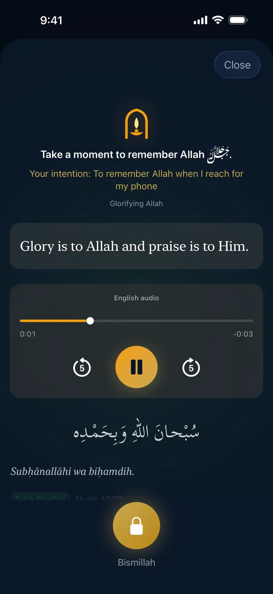
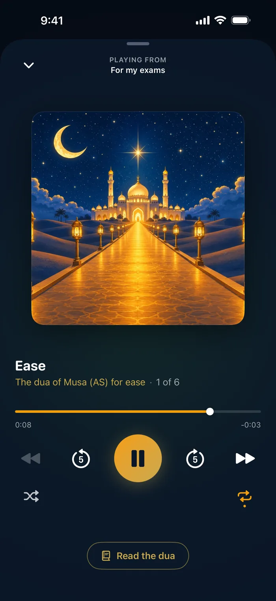
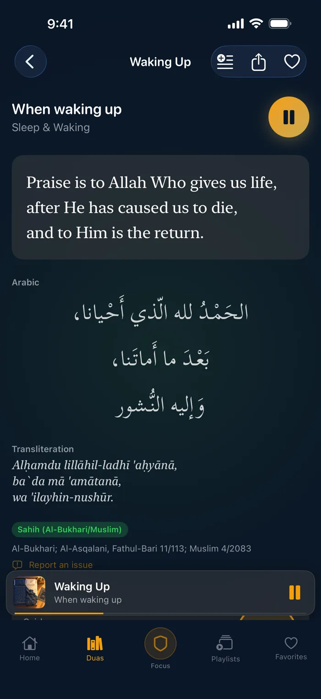
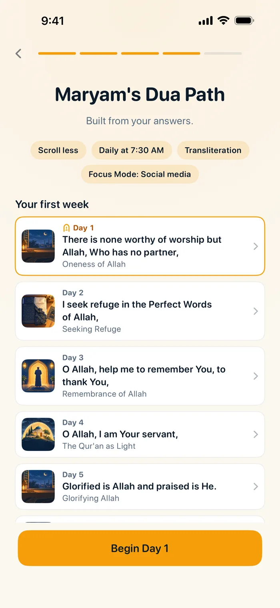
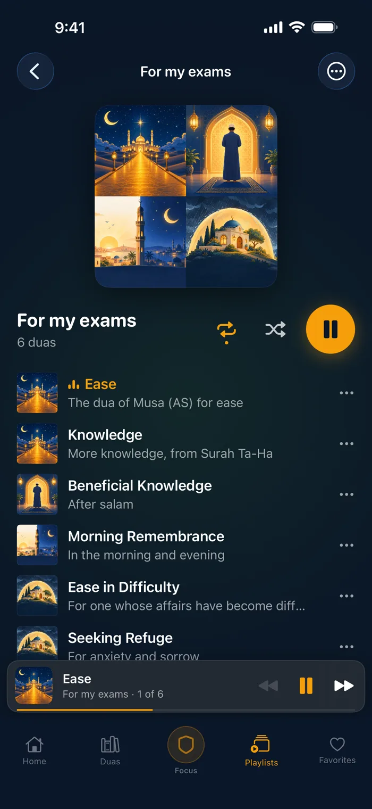
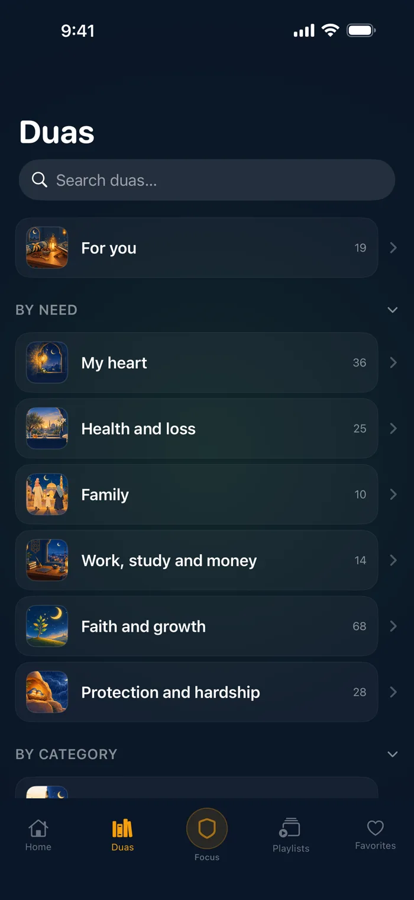

DuaLock
A dua before you scroll
DuaLock turns the moment you reach for your phone into a moment with Allah.
For iPhone with iOS 17 or later. 7-day free trial for new subscribers.
Screenshots
-

A dua before you scrollRead or listen, then your apps open -

Listen to every duaClear English audio for all 282, even offline -

Authentic, with the sourceEvery dua shows its source and grading -

Your own Dua PathA dua for each day, chosen from your answers -

Playlists on repeatLearn duas by heart on a walk or a drive -

Duas for every needWorry, exams, family and more
Where the hours go
Your phone gets hours.
What if five minutes went to Allah?
Based on 4 hours a day, about what many adults spend on their phones. Five minutes is 2% of that.
أَحَبَّ الأَعْمَالِ أَدْوَمُهَا إِلَى اللَّهِ، وَإِنْ قَلَّ
“The most beloved deed to Allah is the most regular and constant even if it were little.”
Five minutes a day won't happen by itself.
But it only takes one decision.
DuaLock locks the apps that keep you scrolling. When you open one, a short dua comes first, then your app. Decide once, and the five minutes come every day.
Inside DuaLock
One dua at a time, in moments you already have.
Focus Mode
A dua before the apps you choose
Choose the apps that pull you away. When you open one, a short dua comes first. Read it or listen in English, and your apps open for the time you chose.
- Choose your appsWith Apple's Screen Time. DuaLock can't see which apps you pick.
- Say a short duaTap "Read my dua", then read it or listen in English.
- Carry on, with Allah rememberedYour apps stay open for the time you chose, from 15 minutes to 2 hours, then lock again.
Listen and learn
English audio for every dua
Every dua has its Arabic text, a transliteration to read along with and an English translation, so you know exactly what you're asking Allah for. And all 282 have clear English audio, ready to play even offline.
Coming very soon, insha'Allah: Arabic audio for every dua
Playlists
Learn them by heart, on repeat
Most of us learned Al-Fatiha by hearing it again and again. Playlists bring that to every dua. Make one for each goal, like your mornings, exam week or the hard days, then press play and put it on repeat.
Listen on a walk, on the drive to work or while you cook. It keeps playing with your screen locked, with the controls on your Lock Screen, and repeats one dua or the whole list until the words are yours.
Purity of Soul
اللَّهُمَّ إِنِّي أَعُوذُ بِكَ مِنَ الْعَجْزِ وَالْكَسَلِ وَالْجُبْنِ وَالْبُخْلِ وَالْهَرَمِ وَعَذَابِ الْقَبْرِ اللَّهُمَّ آتِ نَفْسِي تَقْوَاهَا وَزَكِّهَا أَنْتَ خَيْرُ مَنْ زَكَّاهَا أَنْتَ وَلِيُّهَا وَمَوْلاَهَا اللَّهُمَّ إِنِّي أَعُوذُ بِكَ مِنْ عِلْمٍ لاَ يَنْفَعُ وَمِنْ قَلْبٍ لاَ يَخْشَعُ وَمِنْ نَفْسٍ لاَ تَشْبَعُ وَمِنْ دَعْوَةٍ لاَ يُسْتَجَابُ لَهَا
O Allah, I seek refuge in You from helplessness and laziness, from cowardice and miserliness, from the frailty of old age and from the punishment of the grave. O Allah, give my soul its piety and purify it. You are the best to purify it. You are its Guardian and its Master. O Allah, I seek refuge in You from knowledge that does not benefit, from a heart that is not humble, from a soul that is never satisfied, and from a supplication that is not answered.
With English audio
Your Dua Path
Duas picked for your goals
Most of us know a handful of duas by heart and keep meaning to learn more. Tell DuaLock your goals and what's on your heart, and it picks your duas around them: the ones that speak to your life, at the right time of day, with new ones as you go.
- Tell it what's on your heartA few questions when you begin: your goals, your struggles and what you're praying for.
- Your first week, built for youSeven days, one dua each day, picked from your answers.
- Then a new dua every dayChosen for what you're praying for and the time of day. New duas come first, and the ones you've met come back after a while, so they stay with you.
- Reminders that fit your dayYour daily dua at the time you choose, plus your morning and evening adhkar. Up to three a day, each one optional.
Qur'an and Sunnah
Authentic duas, with sources you can check
DuaLock's 282 duas come from the Qur'an and the Sunnah: 223 as compiled in Hisn al-Muslim (Fortress of the Muslim) by Sa'id bin Ali bin Wahf al-Qahtani, 43 more from the Qur'an and 16 more from the hadith. Every dua shows its source and, where there is one, its grading, so you can check it yourself.
The Arabic text, English translation and transliteration of the 223 duas from Hisn al-Muslim were reviewed by Arwa Hesham, Specialist in Islamic and Arabic Studies, Al-Azhar University.
282duas from the Qur'an and Sunnah
Browse them three ways, as in the app:
By source
- From the Qur'an
- From Hisn al-Muslim
- From other hadith
By need
- My heart
- Health and loss
- Family
- Work, study and money
- Faith and growth
- Protection and hardship
By category
- Morning & Evening
- Prayer
- Sleep & Waking
- Daily Life
- Dhikr & Repentance
- Protection & Hardship
- Ramadan & Fasting
- Social
- Travel
- Sickness & Death
- Weather & Nature
- Hajj & Umrah
- Faith & Guidance
- Family & Parents
Calm by design
A beautiful place to come back to
Every category in DuaLock has its own artwork: a prayer room lit by lanterns, the Qur'an glowing on its stand, minarets at sunset under a crescent moon.
It makes finding a dua feel calm and inviting, never like searching a database. A place you want to open, not one you have to.
- Morning & Evening
- Prayer
- From the Qur'an
- Family & Parents
Privacy
Data Not Collected
That's DuaLock's privacy label on the App Store. There's no account and no sign-up, no ads and no tracking. What you enter stays on your iPhone.
- No account, no sign-upOpen DuaLock and begin. There's nothing to register.
- No ads, no trackingNo analytics either. DuaLock has no server of its own.
- Your answers stay on your iPhoneYour Dua Path is made on your device, from the answers you give.
- Your app choices stay privateApple's Screen Time keeps them private: DuaLock can't see which apps you choose.
FAQ
Questions
What is DuaLock?
DuaLock is an iPhone app for remembering Allah through your day. It has 282 authentic duas from the Qur'an and the Sunnah, including Hisn al-Muslim (Fortress of the Muslim), each with Arabic, transliteration, an English translation, English audio and its source.
It builds you a personal Dua Path, keeps your morning and evening adhkar with reminders, lets you make playlists to learn duas by heart, and places a short dua before the apps you choose with Focus Mode. DuaLock needs iOS 17 or later.
How does Focus Mode work?
You choose the apps that pull you away, using Apple's Screen Time. When you open one of them, it's time for a dua: tap "Read my dua" and DuaLock brings it to you. Read it or listen in English, tap the padlock, and your apps stay open for the time you chose, from 15 minutes to 2 hours. Then they lock again.
DuaLock never sees which apps you picked, and you can turn Focus Mode off anytime in the Focus tab.
Do I need an account?
No. There's no account and no sign-up. Your answers stay on your iPhone, and DuaLock collects no data: its App Store privacy label is "Data Not Collected".
What does it cost?
DuaLock requires a DuaLock Premium subscription, billed yearly or monthly through your Apple Account, with a 7-day free trial for new subscribers. Prices vary by country, and the app shows yours before you subscribe.
The subscription pays for DuaLock's own content and services: the duas with their sources, English audio, your Dua Path, playlists and reminders, and ongoing updates. You can cancel anytime. See the Terms of Use for the details.
Can I hear the duas in Arabic?
Not yet. Today every dua has English audio, with its Arabic text to read along. Arabic audio for every dua is coming in an update very soon, insha'Allah.
Where can I get DuaLock?
On the App Store, for iPhone with iOS 17 or later: DuaLock on the App Store.